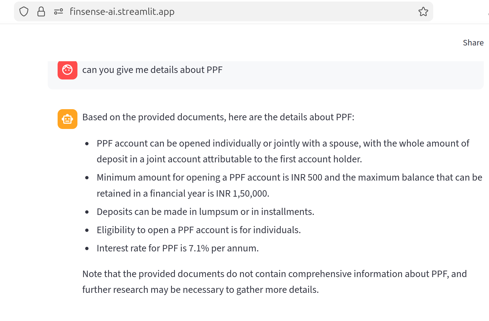
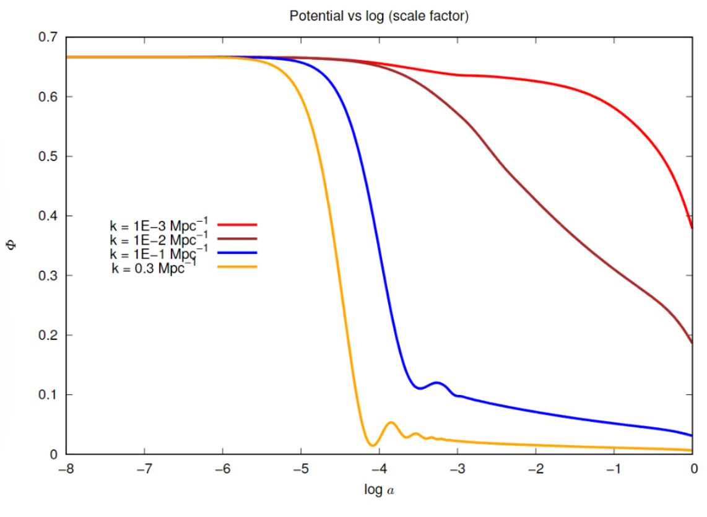
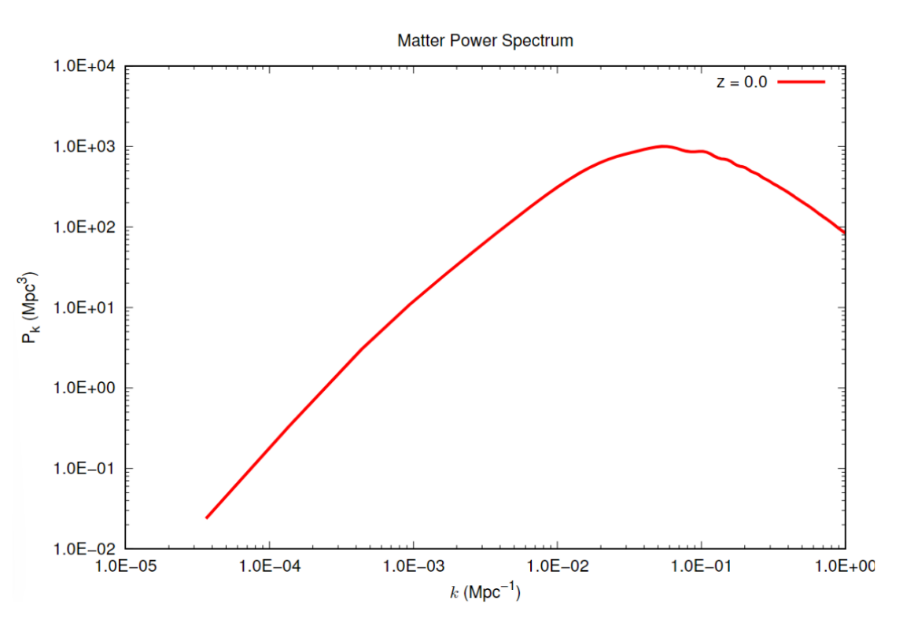

I like building intelligent systems. PG Diploma in Artificial Intelligence from CDAC ACTS Pune and a BS-MS in Physics from IISER Bhopal. Learning to use AI for real-world applications and solutions with a focus on data-driven decision making. Passionate about turning data and research into measurable product improvements.
Hello! I'm Chirag Sharma — an early career Data Scientist and AI/ML Engineer. I obtained a BS-MS in Physics at IISER Bhopal, where I gained an analytic and research mindset to work out complex problems. I worked in the field of cosmology for my master's thesis and then, in Astronomy as a Project Associate at Ahmedabad University in collaboration with SAC, ISRO.
Repeated exposure to computational projects and the desire to work on more applied problems led me to pursue a PG Diploma in AI at CDAC ACTS Pune. Since then, I have been working on AI/ML projects in varied domains, including time-series anomaly detection for maritime sensor data and LLM-powered agentic RAG application for financial queries.
I'm most interested in the real-world applications of AI/ML along with data analysis for data-driven decision making.
Built a conversational AI agent that answers personal finance queries and performs Indian tax calculations from natural language input, deployed live on Streamlit.

**Note: Due to free tier limitations, the app might be inactive. You can always run it locally using the Dockerfile provided in the GitHub repository. Or you can wake it up by clicking on the streamlit link and huggingface link and wait for 30 seconds.
Developed an end-to-end anomaly detection pipeline over ~23 million maritime AIS signals, replacing a static rule-based system with a dynamic, AI-driven workflow.
Project Associate at Ahmedabad University with ISRO's Space Applications Centre. Comparative study of filament detection algorithms on astronomical datasets to identify which best detects interstellar filamentary structures from observational data. Our findings suggested that DisPerSE and FilFinder tend to be more generous in detecting filaments, while getSF tends to be more conservative and detects fewer, dominant filaments. On the quantitative side, we found that MSSIM (Mean Structural Similarity) index was not a good metric for comparing the performance of the algorithms as it did not behave as expected (Green et al. 2017). We concluded that new metrics are needed to compare the performance of the algorithms in an unbiased, objective manner.
Master's thesis at IISER Bhopal. Developed custom numerical solvers for the coupled PDEs arising in linear cosmological perturbation theory — the mathematical framework for understanding large-scale structure formation in the universe. A good reference is Callin 2006.


For a detailed explanation of the above figures, please refer to my thesis.